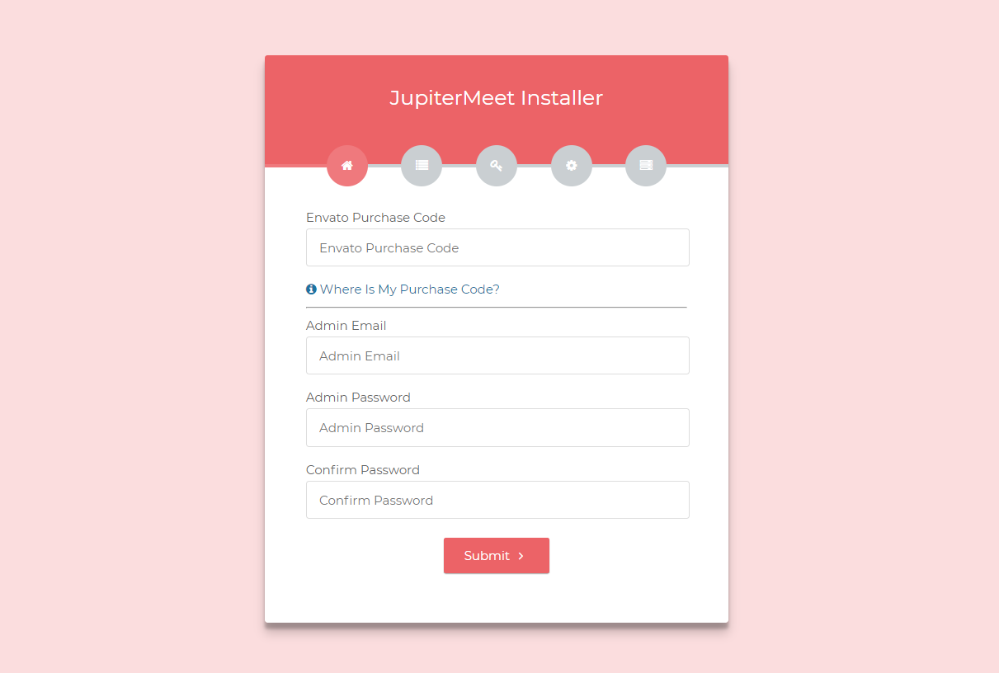

Installation
Introduction
The installation of JupiterMeet is very easy and straightforward. This guide will help you run the bash script which will install and configure all the dependencies required to run the project properly on a clean Ubuntu 18.04 or CentOS 7 server. A basic knowledge of terminal is required.
Please follow all the steps very carefully. Once you have the dependencies installed, you can use the web installer to install the application from the browser itself.
Click here to update from the older version.
VPS
Ubuntu 18.04 with minimum of 2 GB RAM is a recommended VPS.
Check out this link to get a cheap VPS hosting.
Automatic installation
Make sure the server is empty, otherwise it may create issues. Click here if you prefer the manual way.
-
Upload the bash script (jupitermeet-installation.sh) and the application (jupitermeet.zip) to your server
Note: Place the zip and the script in same directory
-
Set execute permission on script
chmod 700 jupitermeet-installation.sh -
Execute the script
./jupitermeet-installation.sh
Once the installation is finished, note down all the details it returns.
Application setup
- Open yourdomain.in/install in the browser 
-
.env section: Follow all the steps very carefully and udpate the values as below
-
Application
- APP_ENV: local or production. Based upon where you want to setup
- APP_KEY: No need to change
- APP_DEBUG: true or false. Generally, true in local server and false on production
- APP_LOG_LEVEL: No need to change
- APP_URL: Your application URL Database
- DB_CONNECTION: No need to change
- DB_HOST: No need to change
- DB_PORT: No need to change
- DB_DATABASE: Database name that you created in the above step
- DB_USERNAME: Database username
- DB_PASSWORD: Database password Email
- MAIL_DRIVER: Email driver
- MAIL_HOST: Email host
- MAIL_PORT: Email port
- MAIL_USERNAME: Email username
- MAIL_PASSWORD: Email password
- MAIL_ENCRYPTION: Email encryption
- MAIL_FROM_NAME: Your application name
- MAIL_FROM_ADDRESS: Your email address
- Please add qoutes if env variables have space in it
- Click save and Install (Make sure you click 'Save .env' before clicking on Install)
Turn on 'less secure apps' from your Google account to allow the application to send emails
- Go to your (Google Account).
- On the left navigation panel, click Security.
-
On the bottom of the page, in the Less secure app access panel, click Turn on access.
- Click the Save button.
Note: The application will send emails in the following cases,
Signaling
Navigate to the /server directory from terminal.
cd /var/www/html/jupitermeet/server
Update .env file to match your requirements
- KEY_PATH: Path to your SSL key
- CERT_PATH: Path to your SSL certificate
- DOMAIN: Your domain with https
- PORT: Port to run NodeJS on
- MAX_FILESIZE: In MB
- USER_LIMIT_PER_MEETING: Users allowed per meeting
Run on production
npm run production
Run on local server
npm run local
Run the TURN server
npm run turn
Configuration
Storage link (optional)
If you see a broken logo, that means the storage link has not been created, use this command (from root project directory)
php artisan storage:link
Global Configuration
- Login and navigate to the Admin > Global Configuration module
- Here you can update application name, logo, theme color etc
- Update the SIGNALING_URL
- Please check the setting's description to undestand them better
Stripe (If payment module is enabled)
- Setup your Stripe account and update STRIPE_KEY and STRIPE_SECRET values
- Turn on the PAYMENT_MODE
Notes:
- Extended License is required to enable the payment module. Updrade to the Extended License
- Non-INR currency with an Indian account is currently not supported. It will be available in the future updates
Scheduling (If payment module is enabled)
Fire this command and add the below line to schedule the cron job.
crontab -e
* * * * * cd /var/www/html/jupitermeet && php artisan schedule:run >> /dev/null 2>&1
Configure Firewall (optional)
If Firewall is active, please open the below ports for signaling and TURN server.
- 9006 TCP
- 3478 UDP
- 443 TCP
- 49152-65535 UDP
Manage Processes
Manage processes with PM2
Manage NodeJS
View running processes
pm2 list
Restart NodeJS server
pm2 restart JupiterMeet
Manage TURN server
Restart TURN server
pm2 restart turnserver
Renew SSL
Let's Encryt will renew certificates automatically but if you need to do it manually, use the below command.
certbot renew
Troubleshooting
- Make sure NodeJS server is up and running.
- Make sure frontend is pointing to the NodeJS server with your signaling port(9006)
- Make sure the app is running on https
- Make sure the SSL certificates are valid
- Make sure no antivirus softwares are blocking the media device access
- To reflect the changes, please clear browser cache and hard reload the page
Update
Make sure you have installed all the prerequisites.
pm2 stop JupiterMeetpm2 list